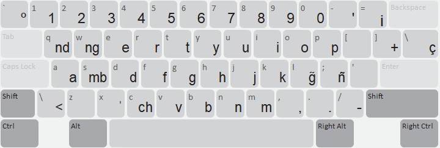
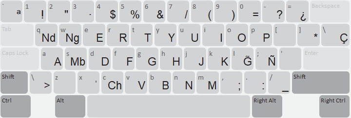
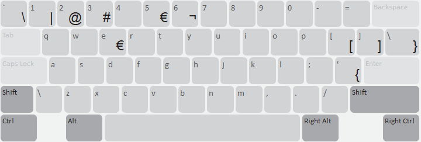
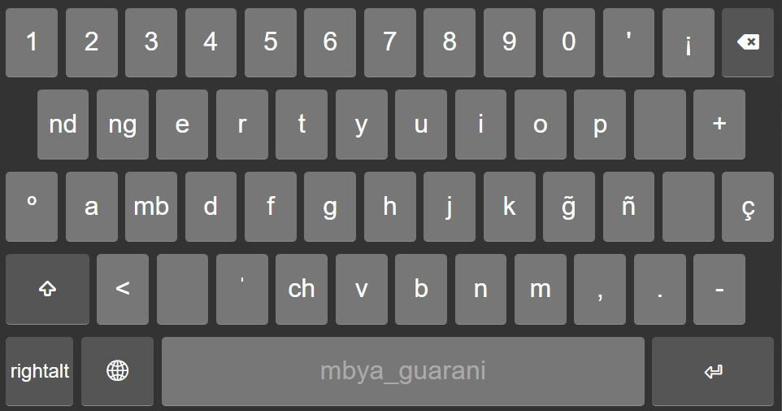
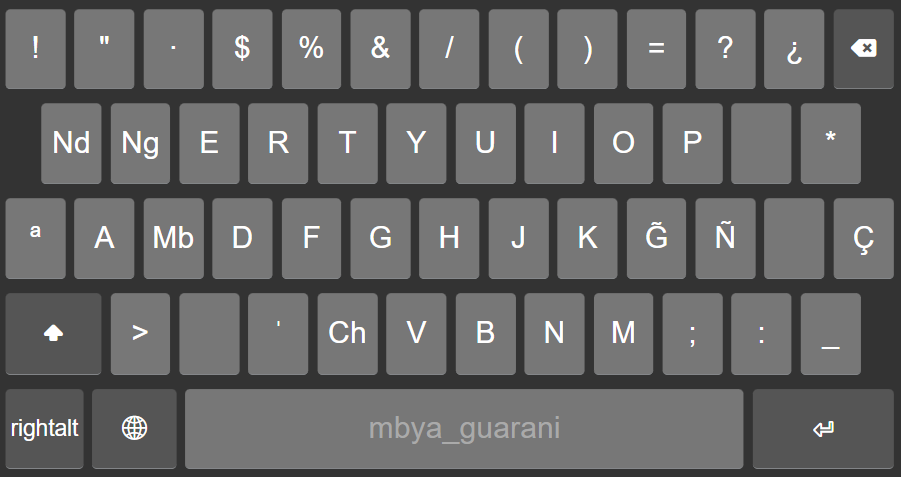
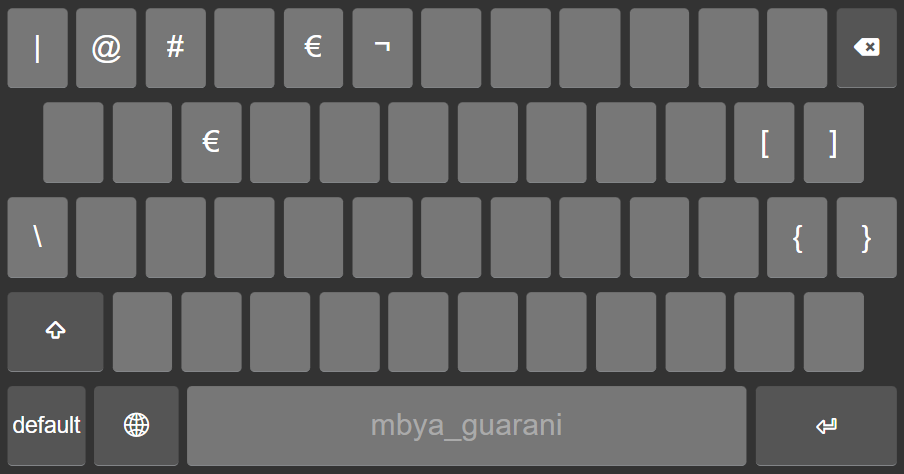

This keyboard is created to type the Mbya Guaraní Indigenous language of Argentina which was developed by Manuel Locria and Facundo Jaureguibehere for Latinoamérica Habla
In 2020, in the middle of the pandemic, teachers across Argentina were giving classes and homework through their phones. Teachers of Qom, Aymara, Mocoví, and Mbya Guaraní Indigenous languages of Argentina, faced an extra problem: their keyboards couldn’t write their languages.
No ỹ. No glottal stop. No way to send a simple message in your own language without “fixing” it into Spanish characters.
Typing in your language is one of those things we take so completely for granted that we never stop to think about what it’s worth, until it isn’t there. So we built the keyboards, using Keyman, an open-source platform for exactly this.
But the part I remember most is how we built them. Speakers sent us handwritten alphabets and voice notes over WhatsApp. They tested every version and told us what worked and what didn’t. The communities weren’t “beneficiaries” of the project, they were the experts on it.
Six years later, that keyboard is still in use!!
The Mbya Guaraní community of Ysyry used it to transcribe 35 interviews in Mbya for “Puã Ka’aguy Tekoa Ysyrypygua,” a fully bilingual book on medicinal plants written together with the National University of Misiones, a book that just represented their province at the International Book Fair in Buenos Aires.
A keyboard built to send WhatsApp messages during a pandemic is now being used to write books.
Language technology doesn’t start with code. It starts with listening.






Developed by Manuel Locria and Facundo Jaureguibehere for Latinoamérica Habla